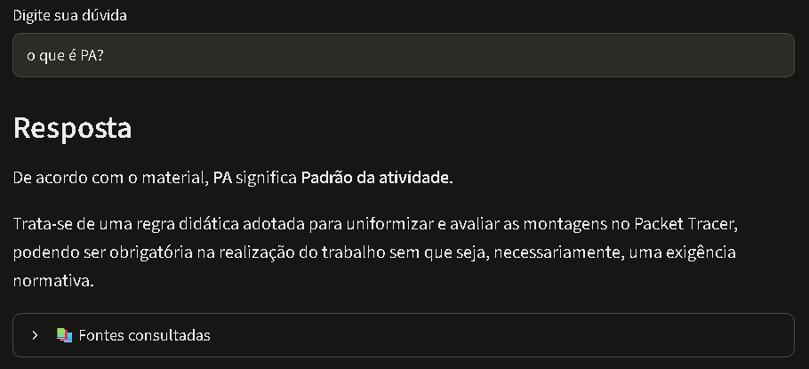

Projeto independente de estudo
Busca os trechos certos em documentos técnicos antes de responder e mostra de onde eles vieram.
Um chatbot genérico responde rápido, mas não sabe o que está no seu material.
A ideia do projeto: usar um modelo de linguagem, obrigando-o a se basear no documento.
Uma dessas páginas tem a resposta. Qual?
O FAISS devolve os 4 trechos mais parecidos com ela.
Regras, trechos com arquivo e página, e a pergunta.
Pedimos que use somente o contexto recebido.
A resposta aparece junto com os trechos recuperados.
O índice criado na ingestão é carregado na consulta.

Captura real do app rodando no meu computador.
O prompt manda responder só com o contexto recuperado.
O painel mostra os trechos enviados ao modelo, com arquivo e página.
Limite: são trechos recuperados, não citações verificadas.